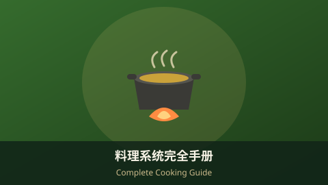
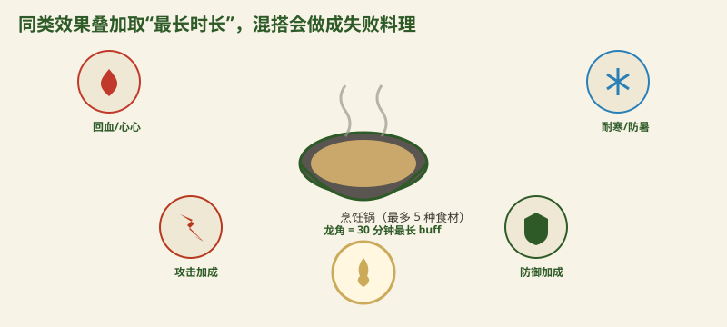

料理系统完全手册（旷野之息）Complete Cooking Guide (Breath of the Wild)

料理是《旷野之息》里最性价比的"外挂"：一套正确的食材组合，能让你在雪山不掉血、在雷兽前免触电、打 Boss 时攻击翻倍。但机制有坑——下面把规则一次讲清。Cooking is the best "cheat" in Breath of the Wild: the right combo lets you survive snowstorms, dodge lightning, and double your damage. But the rules have traps — here's the full breakdown.
一、基本规则1. Basic Rules
- 在烹饪锅（cooking pot）旁按 A，从背包选最多 5 种食材/材料开始烹饪。Stand by a cooking pot, press A, and pick up to 5 ingredients to cook.
- 纯食材 → 做出料理；加入怪物材料 + 昆虫/蜥蜴等动物 parts → 做出药剂（elixir）。All-food makes a meal; add monster parts + critters to make an elixir.
- 所有产出都会带心心（恢复）或黄色临时心（上限外）。Every result grants hearts or temp yellow hearts (above max).
二、效果（buff）机制2. Buff Mechanics
- 效果类型：攻击、防御、速度、潜行、耐寒、防暑、抗电、精力恢复等，由主导食材决定。Buff types: attack, defense, speed, stealth, cold/resist, heat/resist, shock/resist, stamina — set by the dominant ingredient.
- 同类叠加取"最长时长"：放多种同类 buff 食材，时长按最高者算，强度不会相加。Same-type stacks duration: multiple same-type ingredients take the longest time; potency does not add up.
- 混搭不同类型会失败：同时放攻击+防御等不同 buff，会做成失败料理（无加成）。Mixing types fails: attack + defense together yields a failed dish (no buff).
- 龙 parts 拉满时长：龙角 30 分钟、龙爪 10 分钟，是拉长效 buff 的关键。Dragon parts max it out: Dragon Horn = 30 min, Dragon Claw = 10 min buffs.

三、关键食材速查3. Key Ingredients Cheat Sheet
- 💗 大量回血：生命榴莲、生命萝卜、海拉尔鲈鱼、大生命草。💗 Big heals: Hearty Durian, Hearty Radish, Hyrule Bass, Big Hearty Truffle.
- ⚔️ 攻击：大剑鲤鱼、猛兽材料（如莫力布林角）。⚔️ Attack: Mighty Carp, mighty-thistle / monster parts.
- 🛡️ 防御：铠甲鲤鱼、坚甲材料。🛡️ Defense: Armored Carp, armored / ironshroom.
- ❄️ 耐寒：暖暖草、辣椒；🔥 防暑：冰凉草、薄荷。❄️ Cold: Sunshroom, Spicy Pepper; 🔥 Heat: Cool Safflina, Mint.
- ⚡ 抗电：电果（Voltfruit）/ 电蓟（Electric Safflina）（雷暴与雷神兽必备）。⚡ Shock resist: Voltfruit / Electric Safflina (key for thunderstorms & the thunder beast).
- 🔋 精力：精力鲈鱼、耐力蘑菇，配合龙角做长效力药。🔋 Stamina: Endura Carrot / Endura Shroom, paired with a dragon horn for long-lasting stamina.
四、实用配方示例（至少 4 个）4. Example Recipes (4+)
- 攻击+ 长时效：大剑鲤鱼 ×5 → 攻击加成，时长取最高。Attack up: 5× Mighty Carp → attack buff, longest duration.
- 30 分钟任意 buff：任意 buff 食材 + 1 个龙角 → 该 buff 持续 30 分钟。30-min buff: any buff ingredient + 1 Dragon Horn → that buff for 30 minutes.
- 满血回复：生命榴莲 ×N → 直接补满并超出上限的临时心。Full heal: Hearty Durian ×N → fills and overfills your hearts.
- 耐寒药剂：暖暖草 + 怪物材料 → 抗寒 elixir，雪山探险刚需。Cold elixir: Sunshroom + monster part → cold-resist elixir for snow.
想系统背食材？ 推荐 官方精装攻略书，纸质食材索引与地图一目了然。Want a paper index? The Official Guide Book has a printed ingredient index and maps.
查看攻略书 ↗View Guide Book ↗
五、小贴士5. Tips
💡 实用建议：💡 Practical tips:
- 要长时效就靠龙角，不要指望堆食材提强度。For long duration, rely on dragon horns — stacking won't raise potency.
- 失败料理别丢，可以喂马或当普通食物吃。Don't trash failed dishes — feed them to your horse or eat them.
- 火属性/冰属性武器可配合 buff，但 buff 与武器元素独立计算。Elemental weapons stack with buffs, but they're calculated separately.
- 进四神兽前务必做几份对应抗性药剂，能大幅降低难度。Before a Divine Beast, cook the matching resist elixirs — it slashes the difficulty.
AdSense 广告位 2 · 文章底部AdSense Ad 2 · End of Article
审核通过后在此粘贴广告单元代码Paste ad unit code here after approval